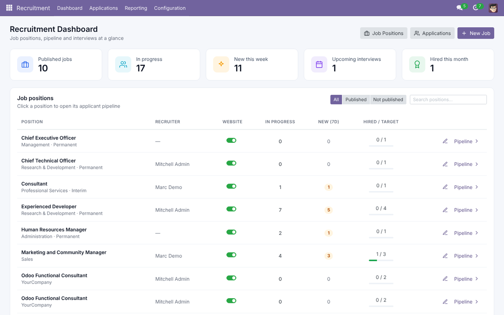
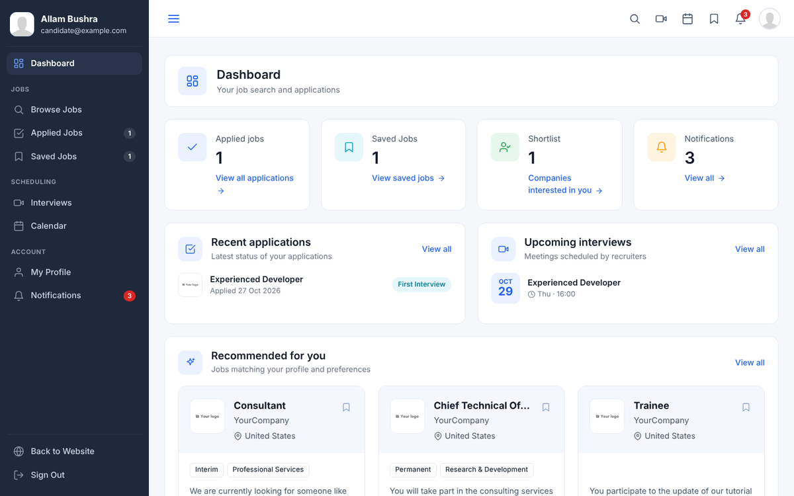

Job seekers sign up, get an ATS score for their CV, apply and follow every status change, while recruiters rank applicants by ATS score and job match inside Odoo.
|
💡 Built on standard Odoo Recruitment
Every application is a normal Recruitment applicant linked to the candidate’s contact, so your pipeline, stages, email templates, interviews and reports keep working exactly as before. Access is automatic: portal users see the Candidate Dashboard, users with the Recruitment Officer or Manager right get Recruitment › Dashboard inside Odoo, and website visitors who are not signed in see no dashboard menu.
|


/my land directly on /my/jobs.|
⚠️ Good to know
One application per candidate and job, and no applications once a position’s Target is reached (it shows a “Position Filled” ribbon; recruiters cannot hire beyond the target either). Candidates only see applications linked to their own contact — never matched by email, because sign-up does not prove email ownership. Portal users get no direct access to the new models; the Recruitment dashboard runs with each recruiter’s own access rights, so record rules and multi-company settings still apply. Depends on: website_hr_recruitment, portal, auth_signup, calendar.
|